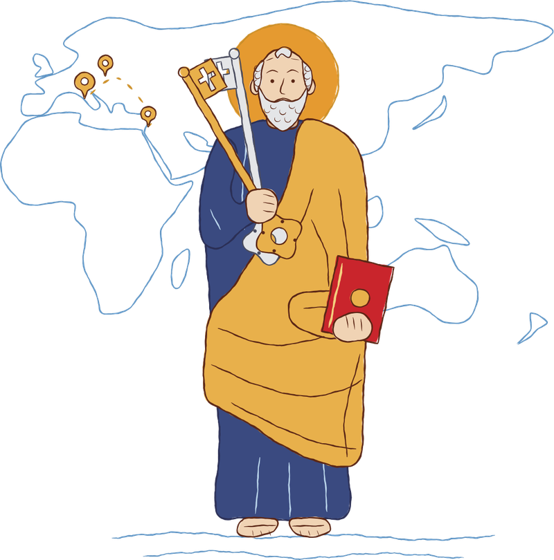

From St Peter to Leo XIV
Every pope.
A place in history.
Follow the places and people behind centuries of papal history.

Choose a pin to discover a story.
Drag to explore · Scroll to zoom
Preparing the map…